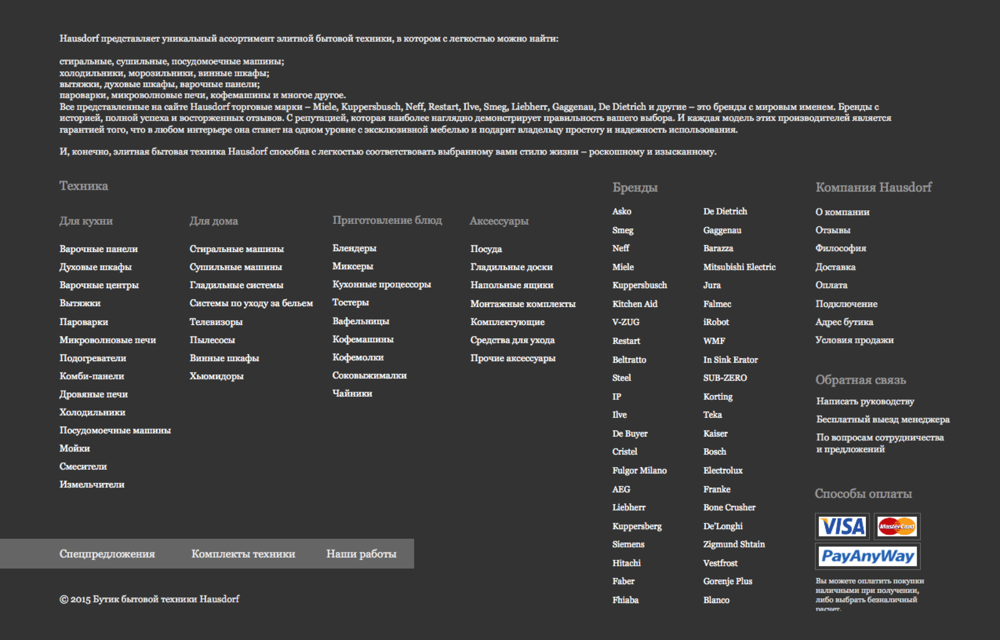

HausDorf – онлайн-бутик бытовой техники, мебели и кухонь, которому нужен был редизайн с учетом предварительного фидбека от пользователей.
Этот кейс о том, как за 4 месяца спроектировать большой Интернет-магазин одному проектировщику; о требовательных клиентах, которые не симулируют потребность в UX; о новых паттернах и Кошельке Миллера.
Почему онлайн - это понятно, но почему же бутик?
Это интернет-магазин, который реализует продукцию для клиентов с уровнем дохода выше среднего и vip.
Если просмотреть бренды и каталог товаров, то станет понятно, почему «бутик» – наиболее приемлимый термин для данного ресурса.
В данном проекте мы постарались учесть самые мелкие нюансы и специфичные задачи бизнеса. Вот некоторые из них:
Трехуровневое меню стало удобнее, потому что фильтрация стала удобнее: при выборе второго уровня тут же можно отфильтровать третий.
Это проект-решение должно помочь пользователю видеть сразу все меню и ускорить работу с каталогом.
Были предложены три вида каталога: линейный, табличный и «шоу-рум», который в дальнейшем решили не делать, так как для него нужны фотокарточки большого разрешения, а у многих товаров их просто нет.
Потребность в двух видах карточек возникла из потребностей бизнеса: второй вид нужен для товаров конкретного бренда, который подразумевает определенные данные и элементы на старанице карточки.
Изначально главная старница должна была иметь вид последовательно переключаемых экранов, где футер имел размеры полного экрана.
Но позднее мы приняли решение отказаться от экранов в пользу лонгрида, но с масштабным футером.
Как визуально не задавить пользователя спецпредложениями? Просто наклейте стикеры на фото товаров.
А если боитесь, что пользователь не узнает о бесплатной доставке – расскажите о ней возле цены.
Поэтому мы дали ему два варианта визуализации данной функции: горизонтальный и постраничный.
Пользователь может «настроить» страницу сравнения под себя.
В работе компании множество важных бизнесовых нюансов, которые нам нужно было учесть в интерфейсах, а так же пользовательские сценарии, которые мы реализовали.
В целом же, глобальных и основных задач было две:
Обновить дизайн, сделать его более современным, соответствовать трендам, производить притяное впечатление на пользователя, а лучше и вау-эффект, не исключая комфорта и полноты информации – это отличные факторы для увеличения конверсии естественным путем.
Комфорт мы выразили прежде всего в функциональности интерфесов, старались по максимуму группировать элементы и категории, соблюдать зональность, использовать расслоение информации и максимально упростить поиск товаров.
Старались соблюдать пользовательские сценарии и аспекты пользовательского поведения на e-commerce площадке направления ‘’бытовая техника’’.
В данном проекте я работала напрямую с CEO компании, который отлично знает все процессы и старается вникать в UX, не просто использовать уже стандартные паттерны, а дорабатывать их под свой проект, придумывать что-то новое (в рамках потребностей пользователей).
Наше взаимодействие происходило, как очно, так и на расстоянии: бизнес-требования, обсуждения, порой и споры - отличный опыт для каждого проектировщика, который утверждает, что не бывает менеджеров, которые стремятся сделать продукт удобнее, а пользователя – счастливее.
Я проектировала desktop-версию: основные страницы в user flow, а так же показала промежуточные состояния элементов, описала все старницы и процессы на них в техническом задании, и параллельно провела сплит-тест по визуализации меню каталога товаров.
Пользователи HAUSDORF разнообразны, как показали изучение метрик, опросы экспертов и наблюдение.
Большая часть клиентов HAUSDORF – физические лица, которые имеют несколько основных сценариев и могут как совершать покупку напрямую, так и пользоваться услугами третьих лиц.
Чаще всего крупные клиенты, которые могут заказывать из любой точки страны. Работают с категориями «Техника» и «Мебель».
Покупателями являются пользователи, которые чаще всего ищут целенаправленно, возможно, слышали уже о HAUSDORF. То есть, это не уники, это пользователь, который имеет конкретную цель.
Через поиск обычно ищут уники – первичные пользователи, которые не знают конкретики поиска, но скорее ищут примеры того, что хотели бы увидеть в своем доме/офисе.
Заказчик, который оплачивает заказ, может использовать для поиска и оформления заказа личного помощника, офис-менеджера.
Помощник ищет целенаправленно, оформляет и подтверждает оплату и заказчика.
Дизайнер – посредник между заказчиком и HausDorf. Данный пользователь самостоятельно определяет пул товаров для заказа,к оторый может согласовать перед оплатой с заказчиком, на которого работает.
Изначально HAUSDORF хотел страницу сравнения, реализованную по аналогии со страницей сравнения Яндекс.Маркет, а так же настаивал на возможности бесконечного добавления товаров к сравнению пользователем.
В итоге, я предложила два view для страницы сравнения, о которых стоит рассказать более подробно, чтобы сценарий стал более понятным.
Пользователь, перейдя к сравнению в данном виде страницы, видит до 7 товаров на странице, их характеристики, цену и фото товара.
Так как горизонтальный скролл - это страшный сон любого проектировщика и возможность быстро разочаровать пользователя, я решила, что его просто нужно «упаковать» в один небольшой элемент, которым будет удобно скроллить страницу с товарами.
Характеристики товаров при этом вполне читабельны.
Данный вид более комфортен для пользователя, но был реализован в проектировании, как запасной вариант, если конкретному типу пользователя будет неудобен горизонтальный скролл даже в его оптимизированном виде.
Таким образом, в этом виде пользователь может сравнивать малые группы товаров – 4 товара, которые переключаются по аналогии со стандартными рекламными слайдерами.
Такой вид более стабилен для внимания и восприятия пользователя, потому что задействует в основном центральное зрение и не перегружает кратковременную память.
Заказчик изначально хотел, чтобы у пользователя была возможность добавлять бесконечное количество товаров для сравнения.
Что, в процессе разбора моторики пользователя относительно данной задачи, оказалось невозможным, потому что психика пользователя должна остаться здоровой после использования функции сравнения.
В качестве примера для данной страницы, заказчик привел Яндекс.Маркет. После разбора ошибок сравнения Яндекс.Маркета, я ввела дополнительный функционал и ограничения по данному виду страницы сравнения товаров.
Я выделила три основных аспекта:
Мы оптимизировали и дополнили требования к старнице сравнения, таким образом, чтобы панель свойств и панель превью-показа товаров при скролле следовали за характеристиками товаров, и пользователь мог легко фокусировать внимание во время чтения на выбранной строке.
Пользователь должен максимально комфортно работать с любым скроллом: чтобы не цеплять курсором горизонтальный скролл, пользователь может передвигать ползунок по уменьшенной копии страницы, таким образом меняя зону просмотра.
Кратковременная память (RDG) не может уместить слишком много объектов, поэтому можно использовать ментальные якоря (количество объектов 4 или 5), что поможет пользователю лучше запоминать и ориентироваться на странице.
Постраничный вид страницы сравнения упрощает моторику пользователя, заставляет производить меньше движений глазами, дает возможность работать со сгруппированными объектами.
Не смотря на то, что группы разделены, что создает рамки для получения информации сразу о всех товарах, добавленных к сравнению, пользователь быстрее удаляет из этих групп неподходящие товары и, таким образом, перегруппировывает их. Далее методом исключения оставляет в каждой группе 1-2 товара, а после – работает уже с меньшим количеством групп товаров.
В любом случае, данное вью было предусмотрено, как запасной вариант, если пользователь не захочет по дефорлут работать с горизонтальным скроллом.
Элементы управления слайдами расположены на панели ниже слайдера, чтобы пользователю было удобнее наводить курсор на элемент и не разбивать логическую пару.
Кратковременная память (RDG) не может уместить слишком много объектов, поэтому можно использовать ментальные якоря (количество объектов 4 или 5), что поможет пользователю лучше запоминать и ориентироваться на странице.
HAUSDORF предложили сценарий по аналогии с компанией-конкурентом. Но при ближайшем рассмотрении чужого сценария в интерефейсах, оказалось, что данный сценарий имеет тупиковую ветвь развития, когда пользователь уже добавив определенное количество товаров в сравнение, не видел плавного перехода к самой странице сравнения.
Так же смутило, что при выборе товаров, пользователь не получал обратной связи в ситуации, когда он набрал в сравнение конкретное количество товаров и возможность дальнейшего добавления была просто заблокирована.
Я постаралась учесть развитие сценарие, переходы и понятный пользователю фидбек:
Пользователь выбирает нужные товары для сравнения, используя чек-бокс в превью-карточке товара или в карточке товара. Когда пользователь выбирает товар, то видит, что чек-бокс меняет цвет и переходит в состояние «выбран».
Пользователь продолжает свое путешествие по выбранной категории каталога и отмечает товары, которые хочет сравнить.
При это у него появляется сообщение под мобильной панель о последнем добавленном товаре: фото и наименование товара, пользователь может видеть общее количество товаров, уже добавленных в сравнение.
Так же у пользователя есть доп,опции: он может закрыть панель, если она мешает, либо перейти в сравнение кликом по кнопке «Сравнить».
В определенный момент пользователь, сам того не заметив, набрал 20 товаров и, пытаясь добавить очередной товар, понимает, что чек-бокс не изменяет ни цвет, ни состояние.
В этот момент пользователь видит уведомление на панели сравнения о том, что он уже добавил 20 товаров и, если он хочет добавить еще один, то нужно один из выбранных удалить.
Если пользователь не замечает уведомления о лимите добавленных товаров (20 шт.) и продолжает кликать на чек-бокс, то после третьего клика, мы выводим ему то же уведомление, что и в панели, но в виде диалогового окна, кторое невозможно не заметить.
Пользователь переходит на страницу сравнения, попадая по дефолту на горизонатльный вид страницы.
Здесь он или удаляет несококльок товаров, чтобы продолжить добавление из каталога, либо выбирает конкретный товар в корзину.
Было интересно пообщаться с пользователями, которые покупают технику онлайн. Очень многие люди не пользуются сравнением и даже не понимают зачем оно нужно. Но были и те, кто сравнивают товары и даже замечают нюансы во время работы с интерфейсом.
Так одна девушка оставила забавный комментарий:
«Меня ужасно раздражает то, что я начинаю класть в сравнение товары, и мне не показывают, сколько еще я могу положить. Но больше всего раздражает, что в какой-то момент я тыкаю в сравнение, потом еще раз, и снова, и… ничего не происходит!
Вот в этот момент мне хочется закрыть сайт и разбить ноут.
Мне нужно понимать, сколько товаров мне, сумасшедшему шопоголику, вообще, разрешено сравнивать.»
– Надежда, 31 год, офис-менеджер
В старом дизайне были два вью: линейный и шоу-рум. Но если линейное вью еще как-то отвечало представлению о данном виде, то шоу-рум был, мягко говоря, странным и при включении не соответствовал ассоциациям относительно дизайна.
‘‘Я кликаю на кнопку переключения вью, страница перезагружается, и я вижу, что почти ничего не изменилось... ‘‘
Я очень хотела сделать свежее решение, чтобы пользователю было не просто интересно, чтобы возникал wow-эффект и хотелось не просто покупать, а разглядывать каталог.
Чтобы реализовать эту идею нужны были:
Минимум элементов интерфейса, чтобы контент оказался в центре внимания пользователя. При этом все самое необходимое должно быть под рукой: информация о товаре и его фото, каталог, поиск, корзина, переключение вью.
Для реализации данной идеи нужен был прежде всего конктент – фото с высоким разрешением, чтобы пользователь мог не просто разглядеть все нюансы, но и через качественные фото проникнуться эстетикой товара.
В таком минималистичном интерфейсе пришлось придумывать возможные варианты реализации трехувроневого кататалога.
В итоге я выбрала вариант открытого каталога – пользователь может видеть сразу все уровни.
Я визуализировала идею, она понравилась клиенту, но еще более мне, поэтому я старалась ее развить: мне хотелось сделать что-то не просто красивое, а что-то действительно атмосферное, передающее пользователю через экран эстетику качественных товаров и вызывающее желание отдавать свои деньги, потому что этот товар действительно того стоит.
‘‘Но как работать с этим вью, если оно «голое»?!... ‘‘
Правда, интересный вопрос? Как в обстановке минимального набора функций дать пользователю возможность комфортно просматривать весь каталог с фильтрацией по брендам?
А что, если пользователь не хочет искать в каталоге, а сразу просмотреть все модели данного бренда?
Я выбрала самый уместный вариант каталога - открытый: видны все уровни, в том числе и бренды. Пользователи могут фильтровать каталог по категория и подкатегориям, выбирая нужный товар, который при фильтрации отображается ниже.
Это была отличная задумка, которую, как обычно бывает, в конечное ТЗ уже не взяли, потому что в процессе проектирования выяснилось, что у клиента нет контента тех параметров, что нужно для реализации данного вью.
Проектируя футер, мы решили, что каталог должен быть открыт, то есть все категории и подкатегории будут видны пользователю.
Наш продуктовый каталог бытовой техники имеет два уровня, но второй уровень сам по себе довольно масштабный, поэтому в определенный момент мне пришла идея сделать пользователю подсказки.
Но когда я показала мокап своему знакомому, он сказал о том, что ему неудобно: он все время «цеплялся» глазами за подсказки.
Так я решила, что стоит это проект-решение проработать через сплит-тест. Я сделала второй, более урощенный вариант и провела сначала коридорное тестирование, в котором участвовало 12 человек, чтобы в целом понять, насколько критично то, что мы сделали и возникнет ли дискомфорт у кого-то еще.
Позже я собрала группу через соц.сети – 36 человек, и очно с каждым из них пообщалась.
Выборку сделала по нескольким критериям, которые помогли собрать более однородную группу для теста: это все платежеспособные пользователи, с доходом выше среднего, делающие покупки онлайн регулярно (временной промежуток между покупками не более 3 месяцев), сделавших онлайн-покупки бытовой техники в последние 1-2 месяца.
Результаты по Варианту А:
7 человек склонны к тому, что им «неудобно читать»;
3 сказали, что «текст скачет»;
2 человека сказали, что их вполне устраивает.
Результаты по Варианту Б:
7 человек сошлись во мнении, что такой вариант удобнее, но в целом очень странно сгруппированы категории;
5 человек просто утвердительно отметили, что «так лучше»;
2 человека сказали, что им не хватает «подсказок».
36 респондентов были почти единогласны:
34 человека сказали о том, что так или иначе «подсказки» – это отлично, но в данном случае они мешают;
2 человека не смогли в итоге ответить, что же им мешает цвет или «подсказки».
В этом варианте 36 респондентов разделились:
27 человек отметили, что так намного удобнее, но обратили в этом варианте внимание на то, что подкатегория «стиральные машины» и соседствующие с ней - это больше относится к категории «Для дома»;
9 человек ограничились тем, что этот вариант комфортнее, чем вариант А.
В сплит-тесте мы уже использовали темный фон (именно темный фон должен быть отрисован в дизайне), поэтому респонденты увидели именно такой мокап.
Само тестирование было направлено на выявление конкретной проблемы, при этом группа была однородная, исключающая дальтоников и людей с патологией зрения (в допустимых значениях).
Но по факту мы получили еще один важный фидбек: респонденты выбирали вариант Б, но когда они видели более структурированные текстовые лейблы, они обращали внимание на то, как подкатегории сгруппированы. Это послужило импульсом к пересмотру нами группы подкатегорий.
В конечном итоге мы приняли такую версию:
Этот проект я вела на фрилансе. Не могу сказать, что он был простым, наоборот, были моменты, когда мне казалось, что если я смогу это – значит смогу все.
Мой клиент был требователен к самых мелким деталям.
HAUSDORF дал мне не только опыт и новые знания для скилла в проектировании, но больше всего – научил меня верному понимаю понятия «хороший Заказчик».
Многие мои коллеги часто описывают идеального клиента, как «человек, который дает мне работать и не учит делать мою работу». Возможно, для многих это действительно важно.
Но как я могу судить сейчас: «правильный заказчик - это тот, кто не симмулирует свое желание сделать жизнь пользователя комфортнее и умеет объяснить, если не свои желания, то хотя бы умеет выстраивать диалог, чтобы ты помог ему определить эти желания».
Я стала больше вникать в дизайн, то есть интерактивные прототипы, вайфреймы, аналитика - это все отлично, но тот адский труд, что после вайфреймов проделывает дизайнер - достоен восхищения: сетка, типографика, композиция, колористика и еще тысяча мелочей. Это интересно.
Мои коллеги часто говорят, что самое важное - это «уметь красть», то есть использовать уже созданные классические паттерны. Это верно, я этого не исключаю. Но я так же понимаю, что есть частные случаи, когда «классика» не работает, поэтому нужно не бояться придумывать что-то новое.
Клиенты разные, но более всего полезны требовательные, потому что с ними учишься быть не только терпеливым, но и лучше прокачиваешь скилл: они заставляют больше узнавать для реализации более новых, свежих, интересных идей и исследований.
До этого исследования мне помогали проводить (маркетинг, продажи, агентства), здесь же я сама организовала все, провела, собрала и обработала результаты. Это сложнее, но этот опыт дал больше понимания о людях, которые участвуют в исследованиях.
Так как проект был большим, то техническое задание так же получилось объемным.
Я постаралась описать в нем все страницы, состояния и нюансы как можно подробнее, чтобы дизайнеру и разработке было удобно работать в дальнейшем.
Очень важным оказалось понимание, что ты лучше учишься, когда учишь сам – клиент задавал порой очень простые вопросы, к которым относишься как к данности (Кошелек Миллера, закон Фитса и проч.) и ты, начиная объяснять, вспоминаешь и стараешься подать информацию доступно – это полезно.
По факту я вынесла еще одно важное знание – иногда чужой кейс (возможно, сырой и недоработанный) намного полезнее, чем несколько книг или статей, потому что:
‘‘В теории между теорией и практикой разницы никакой нет.
На практике эта разница есть. ‘‘